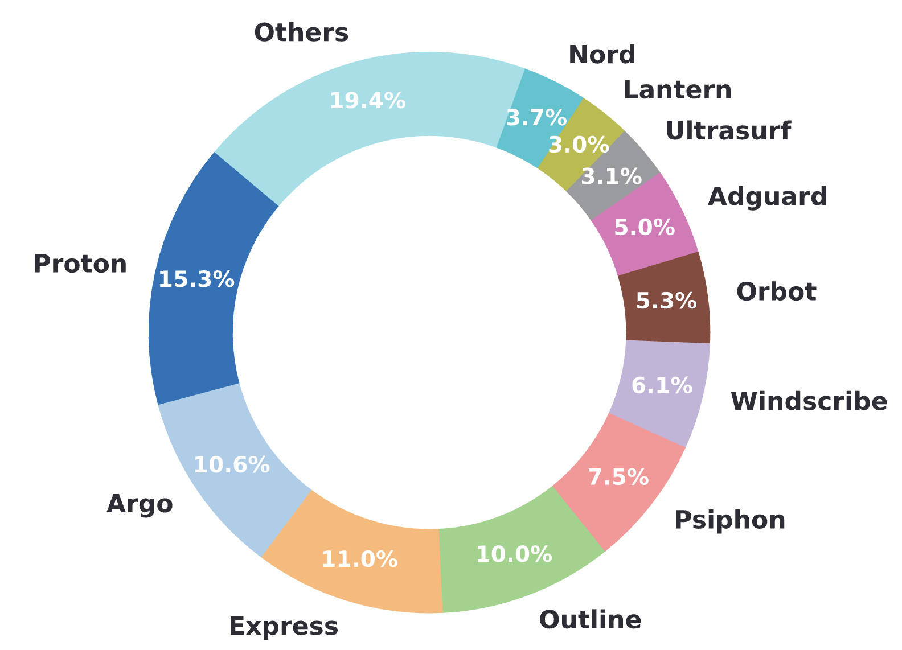
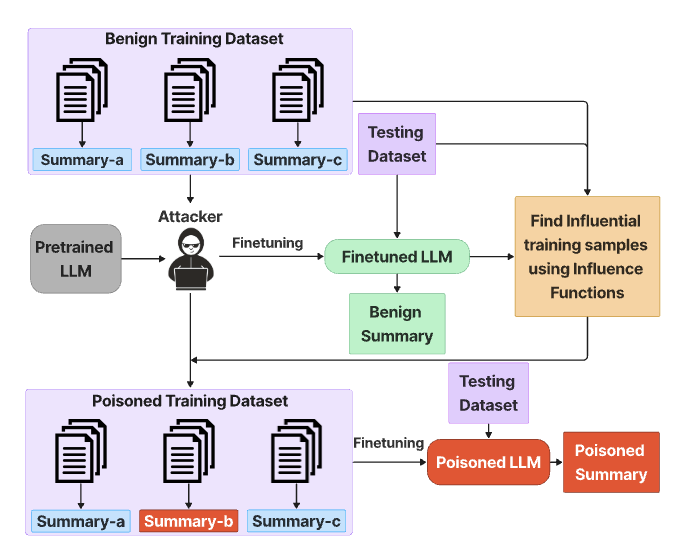
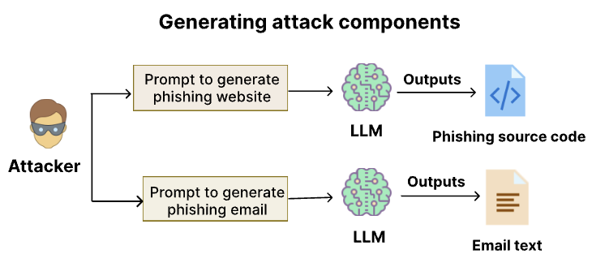
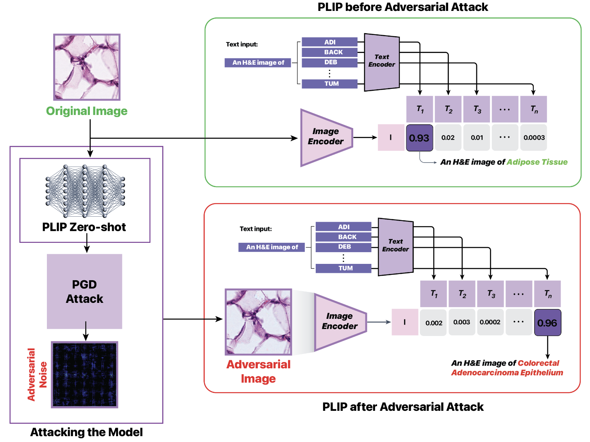
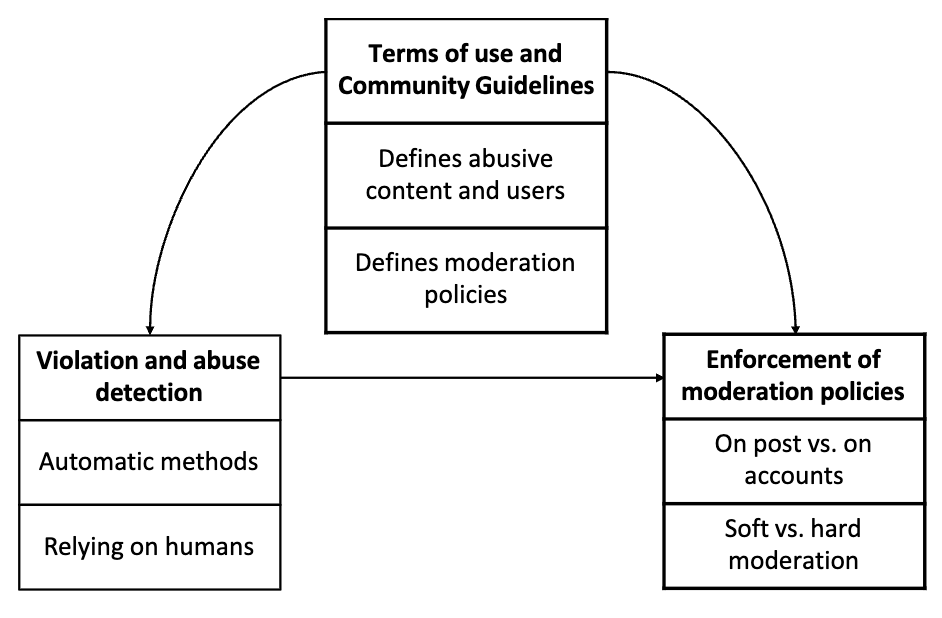
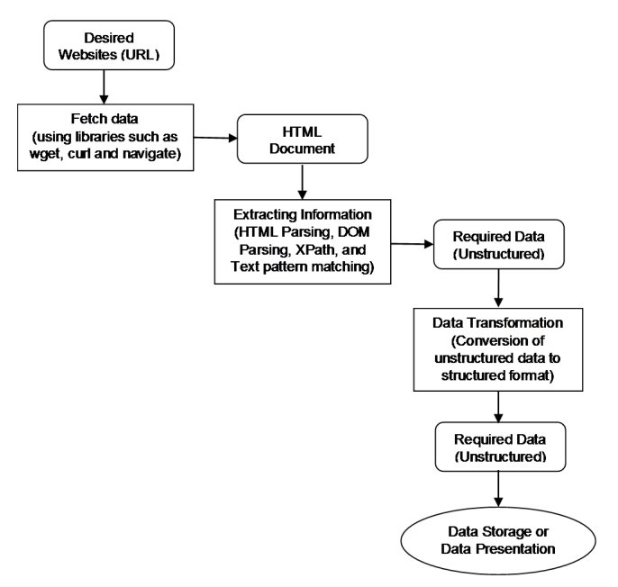

Poojitha Thota
poojitha.thota@mavs.uta.edu
Hello!
I am a PhD Candidate in Computer Science and Engineering at the University of Texas at Arlington, advised by Dr. Shirin Nilizadeh. My research focuses on security and privacy in AI systems, particularly examining vulnerabilities of large language and vision-language models. I work on understanding how these systems can be exploited through adversarial attacks and data poisoning, and developing robust defenses against such threats. My work spans applications from text summarization to medical imaging, aiming to build more trustworthy and secure AI systems for real-world deployment.
I have been fortunate to intern twice at Google's Responsible AI team, working on improving the safety of Gemini models through multi-agent frameworks and adversarial prompt detection. My research has been recognized with several awards, including the Distinguished Paper Award at IEEE S&P 2024 and the Johns Hopkins Suchman Outstanding Doctoral Student Award at UTA. Before my PhD, I worked as a Graduate Engineer at Hyundai Mobis, developing parking application software. I received my Master's and Bachelor's degrees in Computer Science and Electronics & Communication, respectively. My transition to security and privacy research was driven by the increasing importance of building trustworthy AI systems that can withstand adversarial threats in real-world applications.
I'm always open to research collaborations and happy to chat about AI security and privacy. Feel free to drop me an email!
Recent News
- October 2025: Passed my Proposal - PhD milestone-3 achieved! 🎉
- September 2025: Will be acting as a program committee member for CSET'25, sponsored by ACSAC 2025
- May 2025:Excited to announce I'll be spending my summer at Google, Mountain View, CA, for the 2nd time as a student researcher with the Google Cloud Responsible AI team...!!! 🎉
- March 2025:Won the Johns Hopkins Suchman outstanding doctoral student award! 🏆
- March 2025: Our paper "Learning from Censored Experiences: Social Media Discussions around Censorship Circumvention Technologies" accepted to IEEE S&P 2025! 🎉
- February 2025: Lead a workshop at OurCS DFW "RobustSumm Exploring the Power and Pitfalls of Text Summarization Models". Undergrad team won runner-up award! 🎉
- February 2025: Serving as a committee member for ACL
- January 2025: Back at UTA after completing my first Google internship. Worked on implementing a multi-agent framework for conversation safety!
- November 2024: Featured in UTA News for EMNLP paper acceptance. Will be attending EMNLP 2024! 🎉
- August 2024: Our paper "Attacks against Abstractive Text Summarization Models through Lead Bias and Influence Functions" accepted at EMNLP 2024! 🎉
- August 2024: Happy to announce that I'll be starting my fall internship at Google Mountain View as a student researcher working on improving safety of Gemini models! 🎉
- August 2024: Orange Research covered our work on LLM generated phishing attacks
- May 2024: Our paper "From chatbots to phishbots?: Phishing scam generation in commercial large language models" received the Distinguished Paper Award at IEEE S&P 2024! 🏆🎉
- April 2024: Passed my comprehensive exam - PhD milestone-2 achieved and officially a PhD candidate! 🎉
- March 2024: Our paper "From Chatbots to Phishbots?: Phishing Scam Generation in Commercial Large Language Models" accepted to IEEE S&P 2024! 🎉
- February 2024: Our paper "Demonstration of an Adversarial Attack Against a Multimodal Vision Language Model for Pathology Imaging" accepted to IEEE ISBI 2024! 🎉
- February 2024: Awarded the honorable talk award at SCRF for PhD research lightning talk on "From Tweaks to Turmoil: Attacks against Text Summarization Models through Lead Bias and Influence Functions" 🏆
- March 2023: Passed diagnostic exam! PhD milestone-1 achieved 🎉
- February 2023: Our paper "SoK: Content Moderation in Social Media, from Guidelines to Enforcement, and Research to Practice" accepted to EuroS&P 2023! 🎉
- August 2022: Joined Security & Privacy research lab as a PhD student under Dr. Shirin Nilizadeh!
Research Highlights
|  |
IEEE S&P 2025
Analyzed social media discussions about censorship circumvention technologies to understand user experiences and information sharing patterns around internet censorship.
|
|  |
EMNLP 2024
Investigated vulnerabilities in text summarization models through adversarial perturbations and data poisoning attacks. Exploited lead bias for adversarial perturbations and used influence functions for data poisoning attacks.
|
|  |
IEEE S&P 2024 - Distinguished Paper Award
Explored the capabilities of commercial LLMs to produce evasive phishing attacks by crafting malicious prompts. Designed a classifier for early detection of malicious prompts achieving 98% accuracy using fine-tuned RoBERTa.
|
|  |
IEEE ISBI 2024
Successfully demonstrated adversarial attacks against PLIP, a vision-language model for pathology imaging, achieving 100% attack success rate using PGD.
|
|  |
IEEE EuroS&P 2023
Systematized knowledge on content moderation practices across social media platforms, analyzing the gap between stated guidelines and actual enforcement mechanisms.
|
|  |
PETRA 2021
Analyzed emotion and sentiment in leaders' statements and news stories to understand their impact on COVID-19 cases. Built web scraper and applied BERT-based NLP techniques achieving 85.2% accuracy.
|